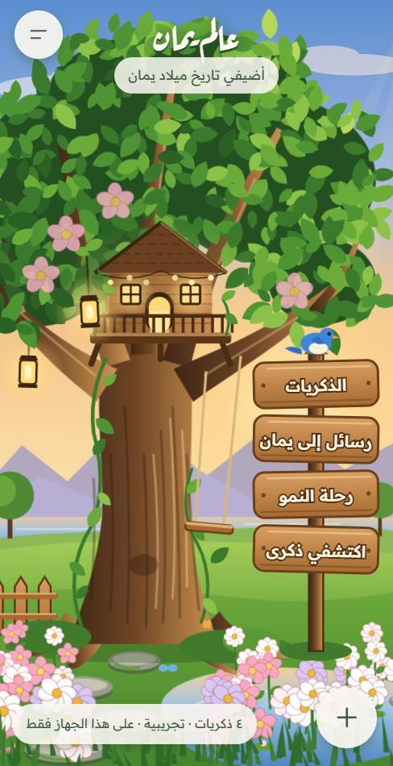
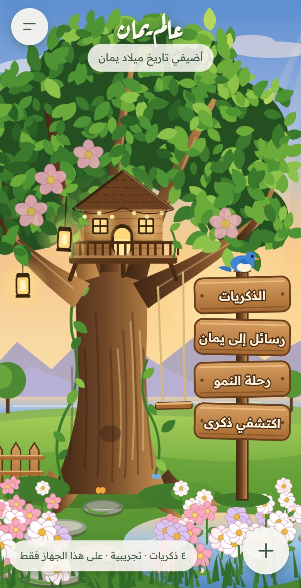
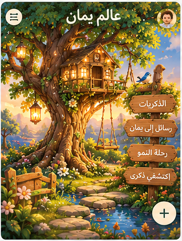

مقارنة بصرية للحديقة الرئيسية
اللقطات على عرض هاتف 390 بكسل، الحديقة نفسها وبالذكريات التجريبية نفسها.



الحالة: العمود الثاني لا يمثل «النسخة الجديدة بأصول فنية»، لأن تلك الأصول غير موجودة. المقارنة النهائية بين الحالية والجديدة تتم بعد وضع الملفات في public/scene/ وتشغيل npm run assets:scan.
المطلوب من الملفات وأحجامها في docs/ASSETS_REQUIRED.md.